Toin, Mie: things to do, food and stays
Toin · Mie
Toin
Highlighted on the Mie map.
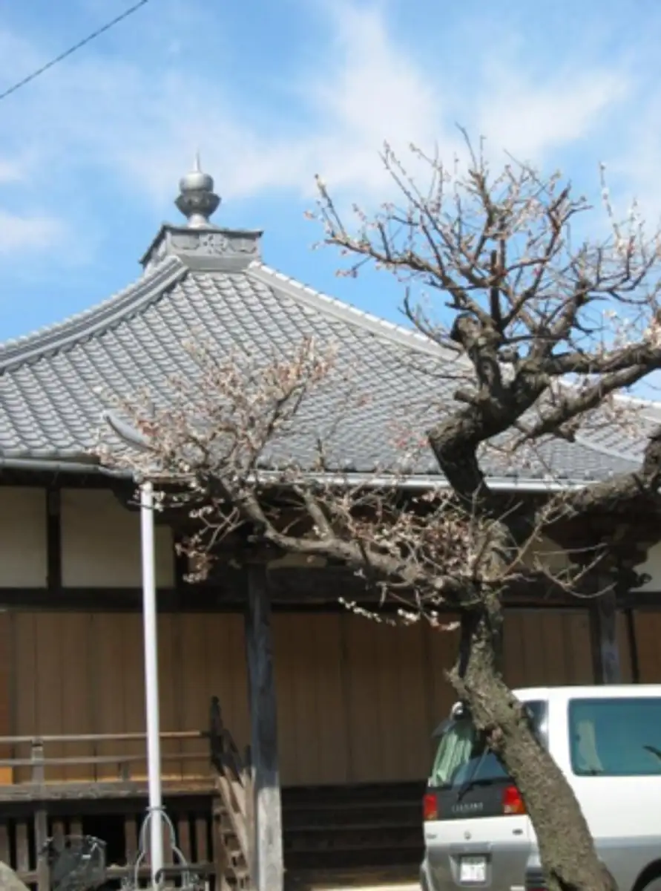
Stay
No bookable places to stay found in Toin — nearest options in Kuwana.
Dining
ガトーヴァレ
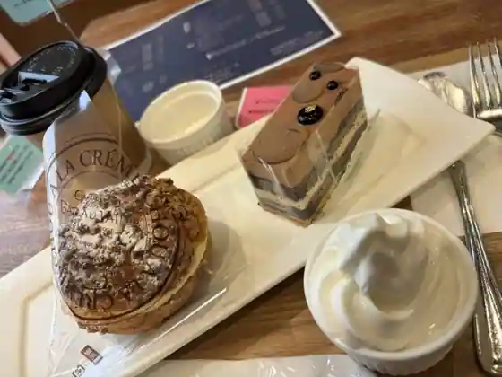
Gatovare
イルチェッポ
Irucheppo
とんかつ Grasso
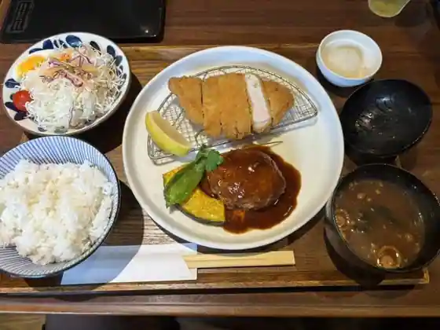
Tonkatsu Grasso
月乃舎
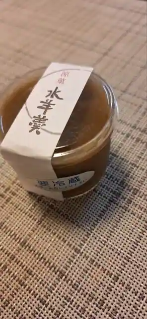
Gatsu No Sha
桑名国際ゴルフ倶楽部 レストラン
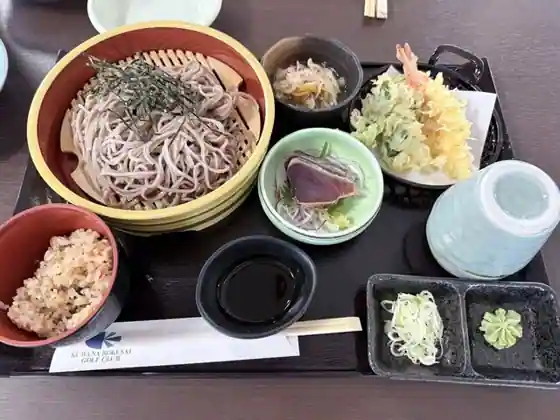
Kuwana Kokusai Gorufu Kurabu Restaurant
ポム・ド・テール
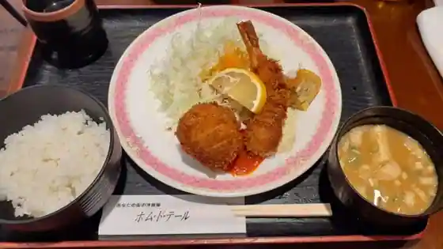
Pomu Do Teru
鰻屋 匠
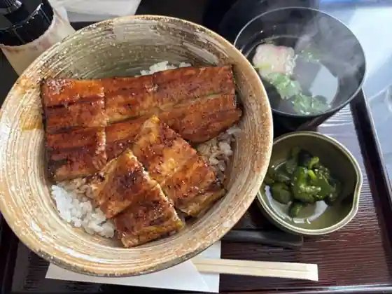
Unagiya Takumi
天ぷら鉄板料理 天旬
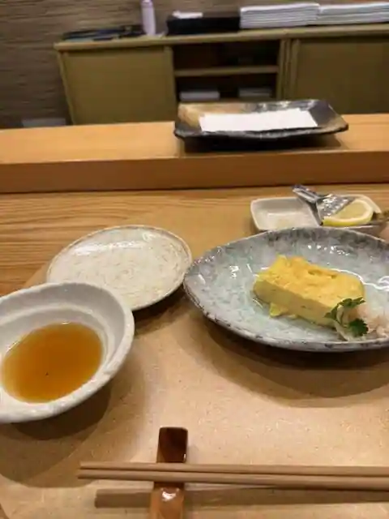
Tenpura Teppan Ryori Jun
カフェレスト ラフィーネ
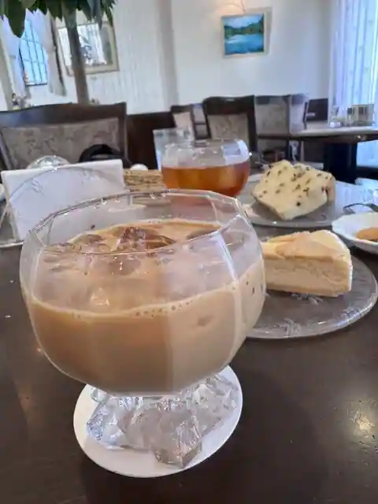
Cafe Resuto Rafine
ラポアール 東員店
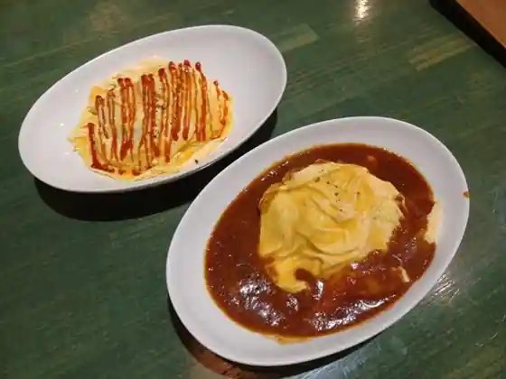
Rapoaru Toin
桃源
Togen
cafe rest HAKUBA
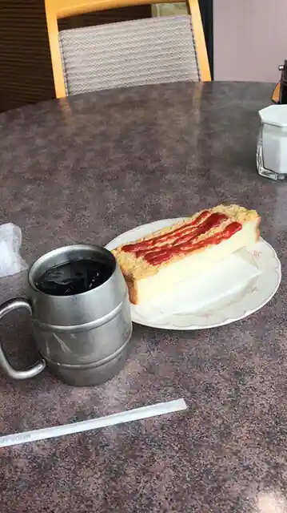
cafe rest HAKUBA
ほたる珈琲
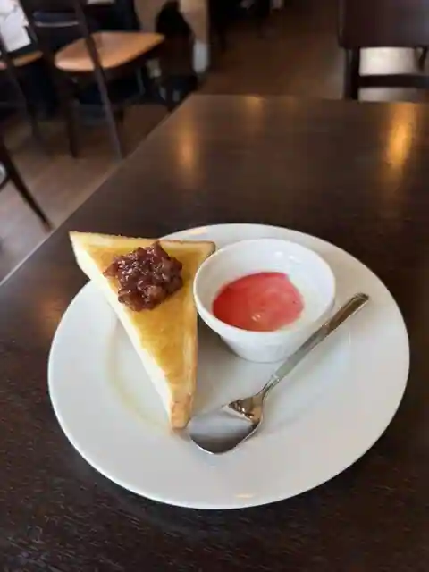
Hotaru Coffee
とんかつ かつ匠 イオンモール東員店
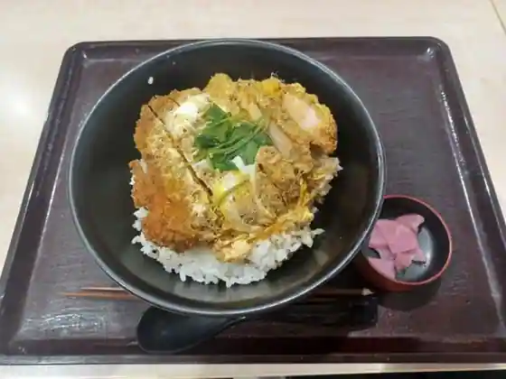
Tonkatsu Katsu Takumi Ionmoru Toin
中国料理 四川
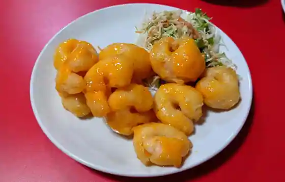
Chugokuryori Shisen
天すけ イオンモール東員店
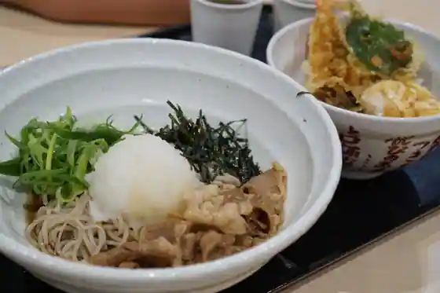
Suke Ionmoru Toin
なかちょう
Nakacho
焼肉 一 un
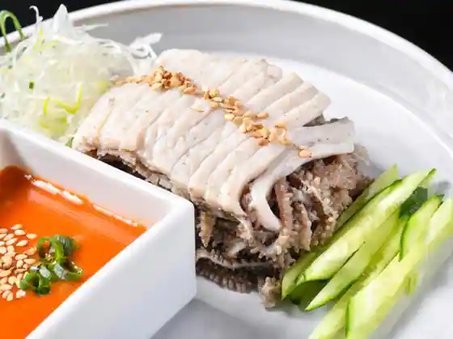
Yakiniku Ichi un
La Chatin
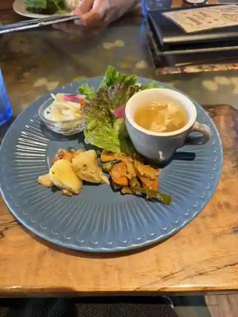
La Chatin
CAFE REST 茶園
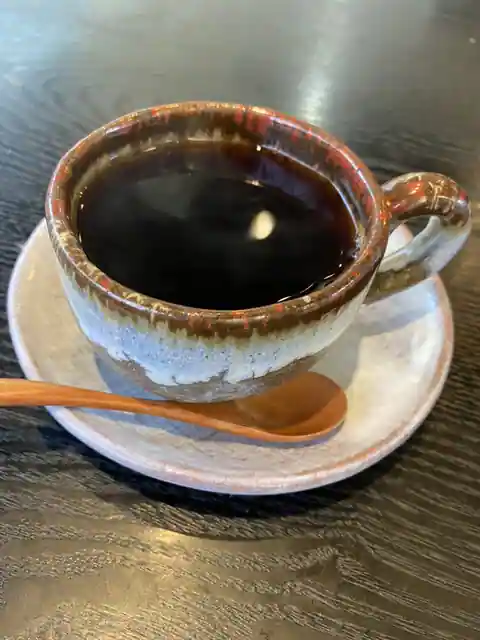
CAFE REST Chaen
くろがねもーち
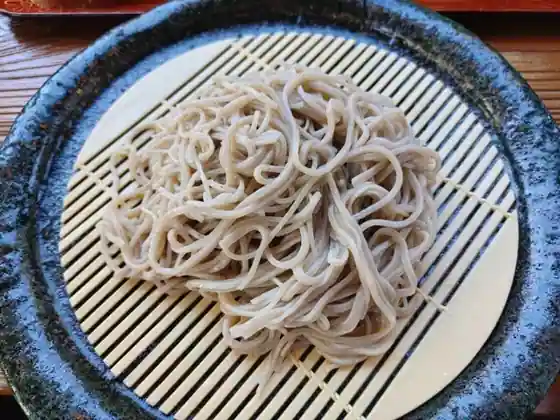
Kuroganemochi
うどん処 浅田屋
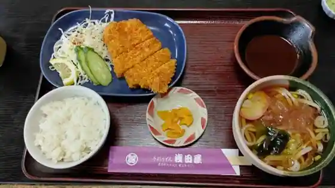
Udon Tokoro Asada Ya
癒し酒場 まんまや ひなた
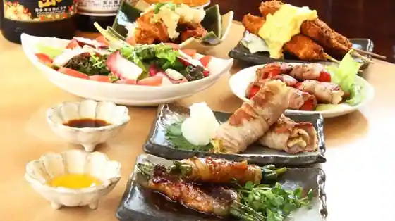
Iyashi Sakaba Manmaya Hinata
あき野
Aki No
Sights
Toin Chubu Park
Yamada Tame Park
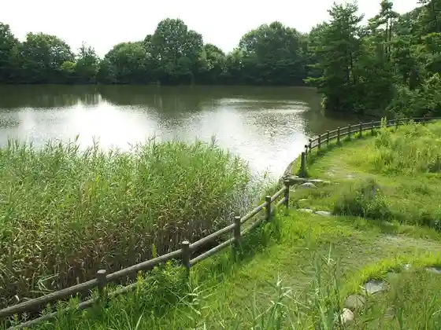
Kabuki Park (Shichi Yo Matsumotokoshiro Takeo Tan Village)
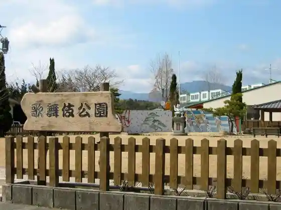
Ano Yama Oi Tera